Prompt Tuning: From Fine-Tuning to Soft Prompts and Beyond
By Hiva Mohammadzadeh | Stanford MSCS · UC Berkeley EECS
The Problem with Fine-Tuning
Fine-tuning is the most straightforward way to adapt a pre-trained language model to a new task. You take your base LLM, feed it a smaller labeled dataset specific to your domain, and update all of the model's parameters through backpropagation. The result is a fine-tuned model that performs well on your target task.
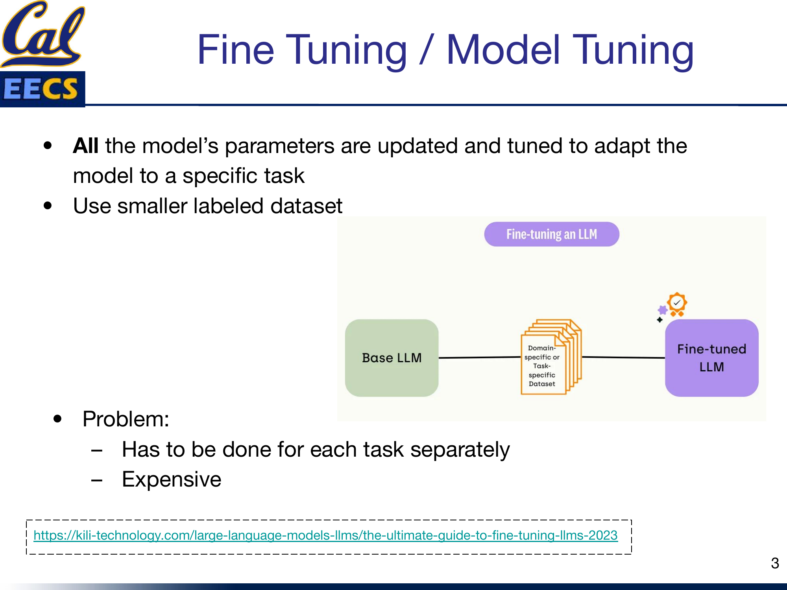
Fine-tuned LLM pipeline" loading="lazy">Diagram: Base LLM + Domain/Task-specific Dataset --> Fine-tuned LLM pipeline
The problem is cost and scalability. Every new task requires its own fine-tuning run. If you have ten tasks, you need ten separate fine-tuned models. For a model with 11 billion parameters, that means storing and serving ten copies of 11 billion parameters. The compute cost of the fine-tuning runs themselves adds up fast. And you need a labeled dataset for each task, which in many domains is hard to come by.
This is the fundamental tension that motivates everything in this post: how do we get task-specific behavior from a general-purpose model without retraining the entire thing?
Hard Prompts: Prompt Engineering
The simplest answer is prompt engineering, sometimes called "hard prompting." Instead of changing the model, you change the input. You craft a natural language prompt -- a task description, maybe some examples, and an output indicator -- and prepend it to your input at inference time. The model stays frozen. No training required.
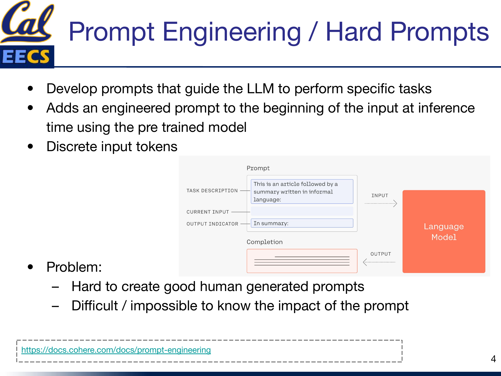
Language Model --> Completion" loading="lazy">Diagram: Prompt structure showing Task Description + Current Input + Output Indicator --> Language Model --> Completion
The prompt is made of discrete input tokens -- actual words and sentences that a human writes. This is what makes them "hard" prompts. You can read them, edit them, and reason about them.
But hard prompts have real limitations. First, it is genuinely difficult to craft a good prompt. Small wording changes can produce dramatically different outputs, and there is no systematic way to know which phrasing will work best. Second, the search space is combinatorial -- you are trying to find the right sequence of discrete tokens from a vocabulary of tens of thousands, and you cannot use gradient descent to help you because the search space is not differentiable. Third, it is difficult or impossible to know the downstream impact of a prompt before running it. You are essentially guessing and checking.
This is a ceiling. No matter how clever your prompt engineering, you are limited by what you can express in natural language tokens.
Soft Prompts: Learning the Prompt
Soft prompts break through that ceiling. Instead of discrete tokens that a human writes, soft prompts are continuous vectors in the model's embedding space -- learned representations that are optimized directly through backpropagation. They are not words. They are embeddings that represent patterns the model can leverage for a specific task.
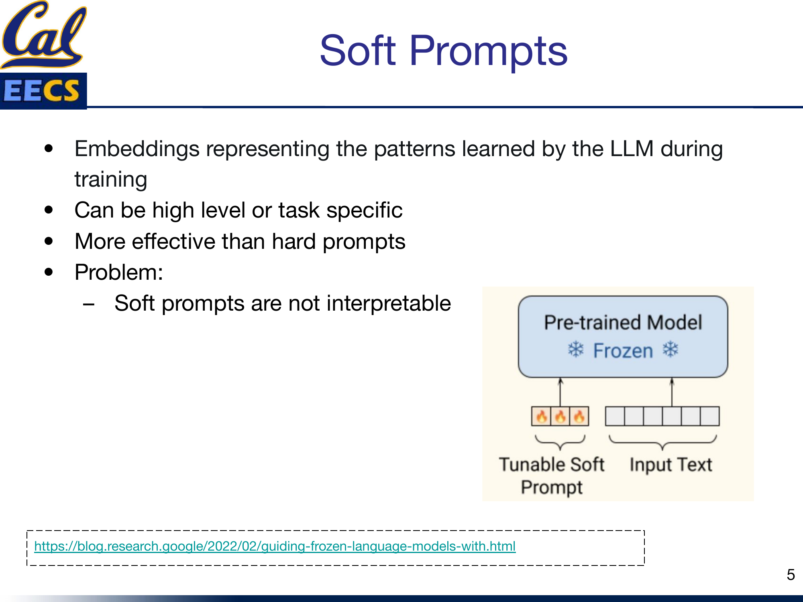
Diagram: Pre-trained Model (Frozen) with Tunable Soft Prompt prepended to the Input Text
The key idea is that the model itself stays frozen. Only the soft prompt vectors are trainable. This means you can adapt a massive model to a new task by learning a tiny set of parameters while leaving the billions of model weights untouched.
Soft prompts can be high-level (capturing general task patterns) or task-specific (tuned for a narrow domain). They are consistently more effective than hard prompts because they are not constrained to the discrete token vocabulary -- they can occupy any point in the continuous embedding space, giving them far more expressiveness.
The tradeoff is interpretability. You cannot read a soft prompt. It is a matrix of floating point numbers. You cannot look at it and understand what the model "learned" the way you can read a hard prompt and understand the instruction. This lack of interpretability is a recurring theme -- it is the price you pay for moving from discrete to continuous optimization.
Prefix Tuning vs. Prompt Tuning
This is where the terminology gets confusing, because "prefix tuning" and "prompt tuning" are two distinct methods that sound similar. They share the same high-level idea -- freeze the model, learn some task-specific continuous vectors -- but they differ in where and how those vectors are inserted.
Prefix Tuning
Prefix tuning, introduced by Li and Liang (2021), adds task-specific token vectors to the key and value matrices at every layer of the transformer. These prefix parameters are inserted across all layers and are optimized through a separate feed-forward network during training.
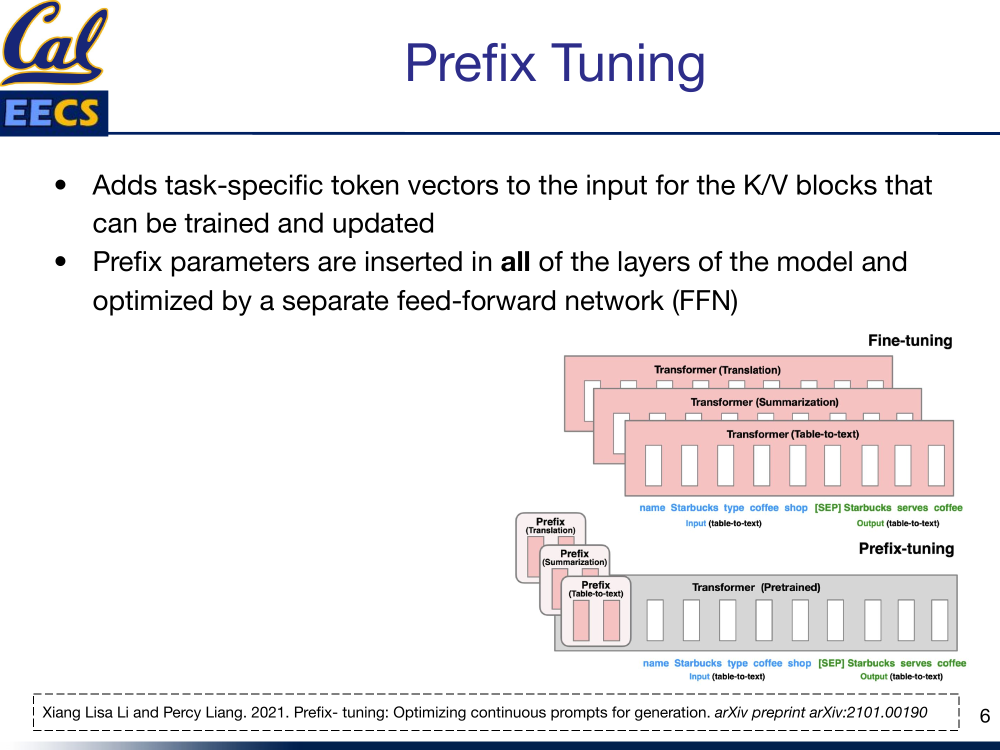
Diagram: Comparison of Fine-tuning (separate Transformer copy per task) vs. Prefix-tuning (shared Pretrained Transformer with task-specific Prefix vectors at each layer)
The practical benefits are significant. Because different tasks only differ in their prefix parameters, it is easy to batch requests from different tasks through the same model -- you just swap the prefix. And prefix tuning tends to improve out-of-domain generalization compared to full fine-tuning, likely because you are not overfitting the entire model to one task's distribution.
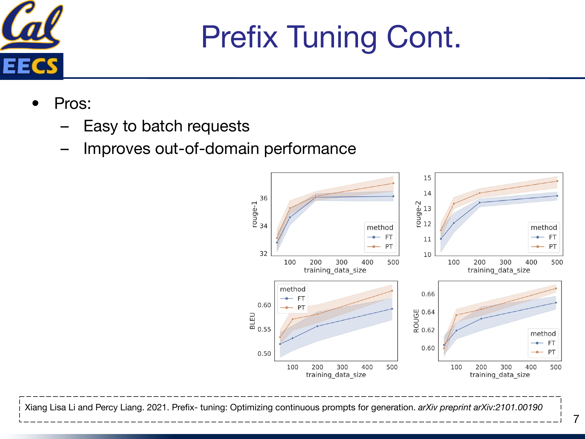
Charts: ROUGE-1, ROUGE-2, BLEU scores comparing Fine-tuning (FT) vs. Prefix-tuning (PT) across varying training data sizes
The performance data tells a clear story: prefix tuning matches or approaches fine-tuning performance across standard metrics, especially as training data decreases -- which is exactly when you need parameter-efficient methods the most.
Prompt Tuning
Prompt tuning, introduced by Lester et al. (2021), is a simpler and more parameter-efficient variant. Instead of adding learned vectors at every layer, prompt tuning adds soft prompt embeddings only at the model's input embedding layer. These embeddings are then tuned through standard backpropagation.
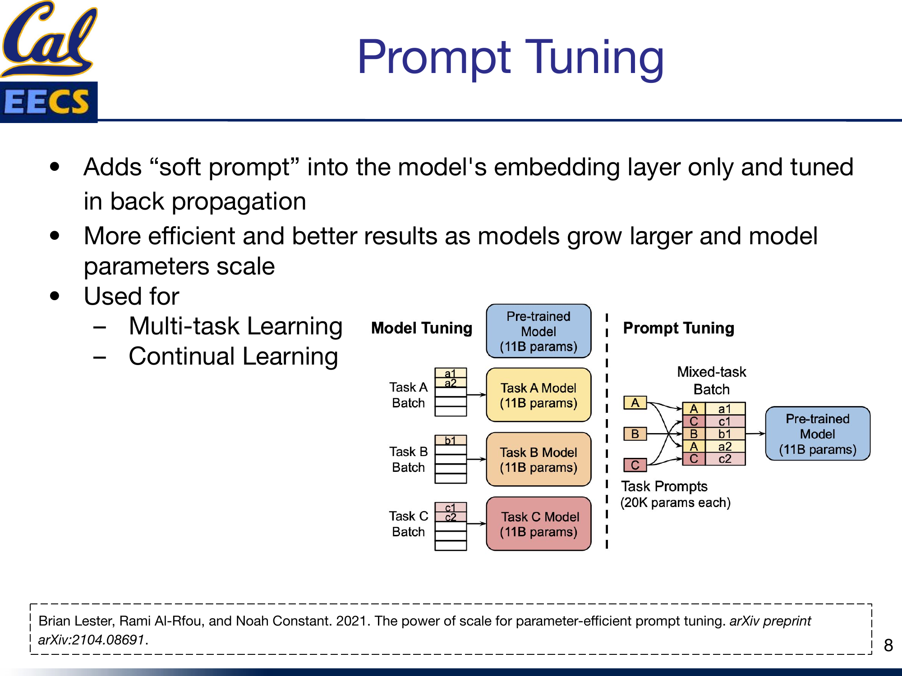
Diagram: Model Tuning (separate 11B parameter model per task) vs. Prompt Tuning (shared 11B model with ~20K parameter task-specific prompts, supporting mixed-task batches)
The efficiency gains are dramatic. A full 11-billion-parameter model requires 11 billion parameters per task when fine-tuned. Prompt tuning requires roughly 20,000 parameters per task -- the soft prompt vectors -- while sharing the single frozen model across all tasks. That is a reduction of over five orders of magnitude in task-specific parameters.
The most striking finding from Lester et al. is that prompt tuning's performance scales with model size. At smaller scales, there is a noticeable gap between prompt tuning and full model tuning. But as models grow larger -- approaching 10 billion parameters -- prompt tuning closes the gap almost entirely.
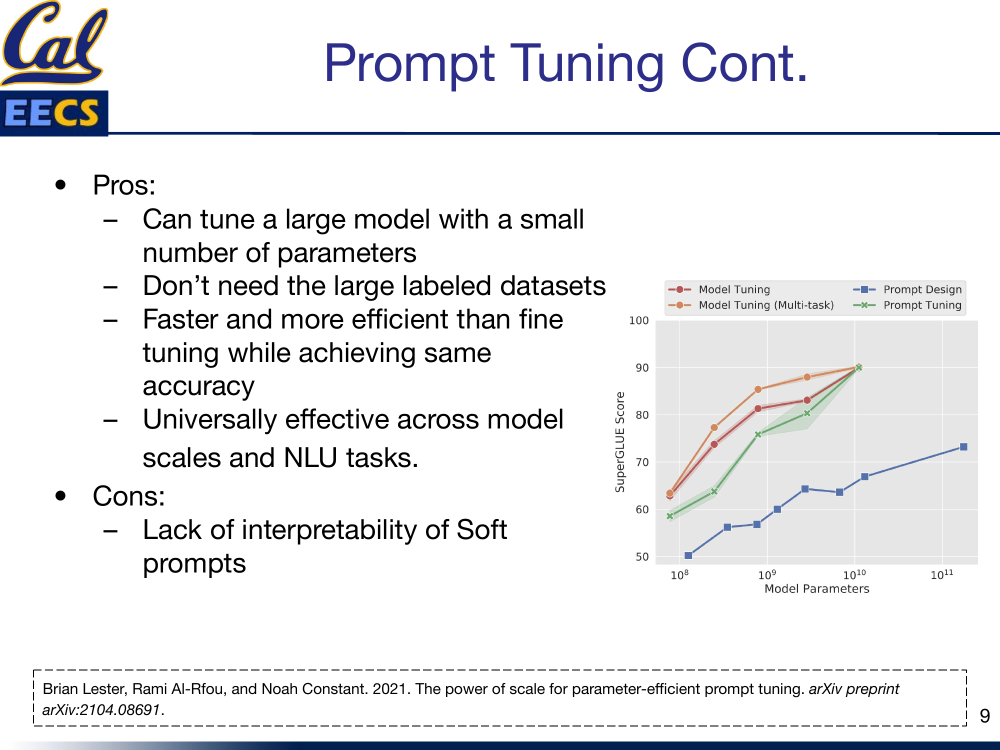
Chart: SuperGLUE Score vs. Model Parameters (log scale) for Model Tuning, Multi-task Model Tuning, Prompt Design, and Prompt Tuning -- prompt tuning converges with model tuning near 10^11 parameters
This is a powerful result. It means that for the largest models -- the ones where fine-tuning is most expensive -- prompt tuning is both the cheapest and the most effective alternative.
Summary of pros and cons for prompt tuning:
- You can tune a massive model with a tiny number of parameters
- You do not need large labeled datasets
- It is faster and more efficient than fine-tuning while achieving comparable accuracy
- It is universally effective across model scales and NLU tasks
- It supports multi-task and continual learning natively
- The main downside: soft prompts remain uninterpretable
Prompt Ensembling: Boosting and Bagging for Prompts
Single prompts, even well-tuned ones, can be unstable. Small perturbations in the input or the prompt can flip the output. This is where prompt ensembling comes in -- using multiple prompts together to get more reliable predictions.
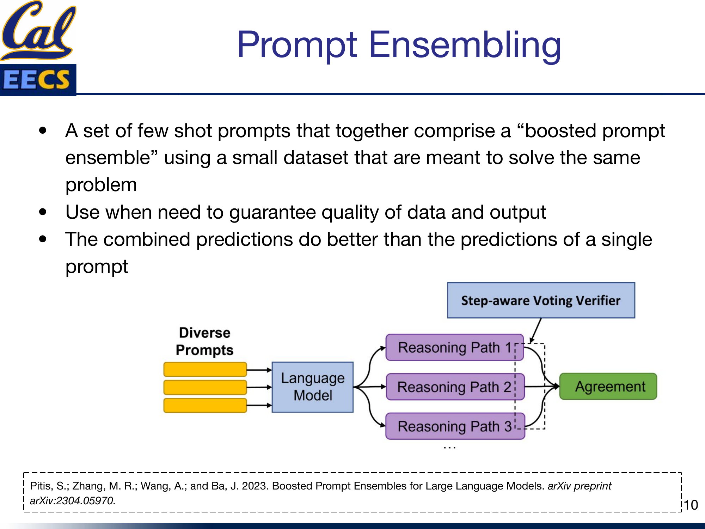
Language Model --> Multiple Reasoning Paths --> Step-aware Voting Verifier --> Agreement" loading="lazy">Diagram: Diverse Prompts --> Language Model --> Multiple Reasoning Paths --> Step-aware Voting Verifier --> Agreement
The idea is borrowed directly from classical ensemble methods in machine learning. A set of few-shot prompts together form a "boosted prompt ensemble," and their combined predictions outperform any single prompt.
There are two main strategies, mirroring the classical ensemble literature:
- Boosting: Prompts are combined sequentially. Each successive prompt focuses on correcting the errors made by previous prompts, reducing bias over iterations.
- Bagging: Prompts are run in parallel on different subsets of the training data. The diversity across prompts reduces variance, and predictions are aggregated (typically by majority vote).
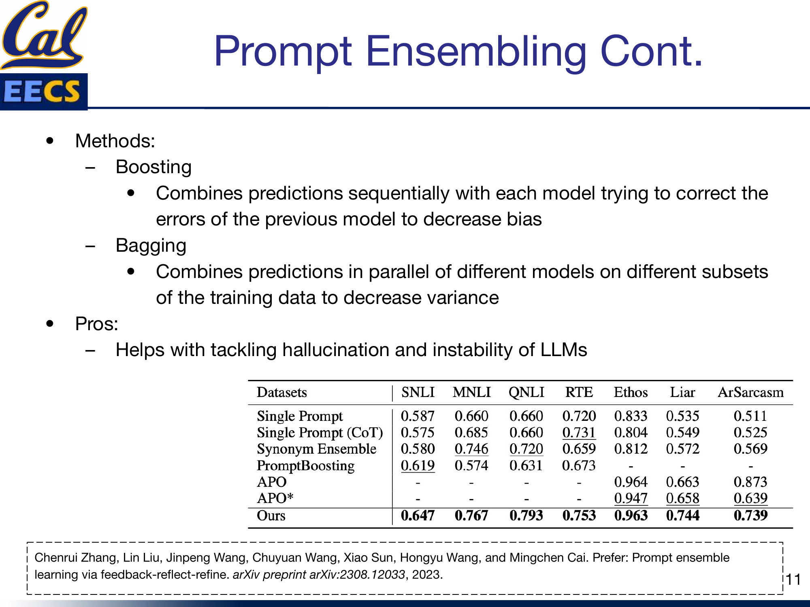
Results table: Ensemble performance across SNLI, MNLI, QNLI, RTE, Ethos, Liar, and ArSarcasm benchmarks
The practical value of prompt ensembling is in tackling two of the biggest problems with LLMs: hallucination and output instability. When multiple diverse prompts agree on an answer, you can have higher confidence that the answer is correct. When they disagree, that disagreement itself is a useful signal -- it tells you the model is uncertain, and you should be cautious about trusting the output.
Use prompt ensembling when you need to guarantee quality of data and output. It costs more inference compute (multiple forward passes), but for high-stakes applications, the reliability gains are worth it.
Chain-of-Thought Prompting
Chain-of-thought (CoT) prompting is a different kind of intervention. Instead of changing what the model is asked to do, it changes how the model is asked to think. You prompt the model to produce intermediate reasoning steps before arriving at a final answer.
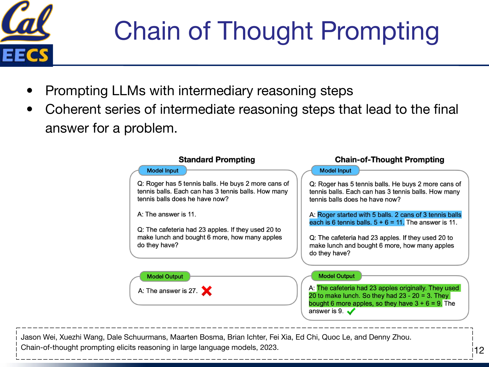
Side-by-side comparison: Standard Prompting produces wrong answer (27) vs. Chain-of-Thought Prompting produces correct answer (9) by showing step-by-step reasoning
The example in the slides makes this concrete. A standard prompt might lead the model to output 27 for an arithmetic problem -- incorrect. The same problem, prompted with a chain-of-thought example that demonstrates intermediate steps, leads the model to correctly output 9 by working through the logic step by step.
This works because LLMs are next-token predictors. When you show them a reasoning chain in the prompt, they learn to produce similar chains, and the act of generating intermediate steps forces the model to "think" sequentially rather than jumping to a potentially wrong conclusion.
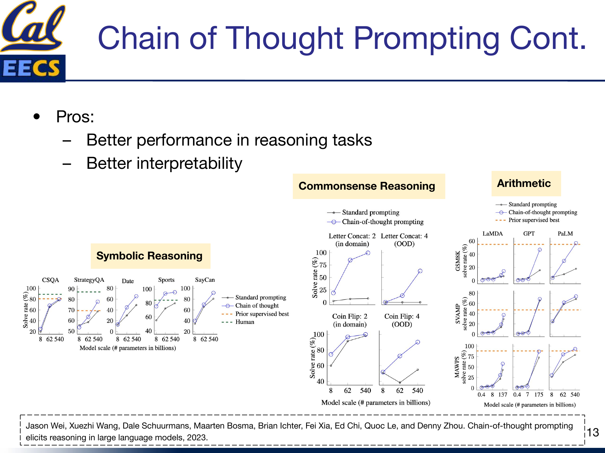
Charts: CoT performance gains in Commonsense Reasoning, Symbolic Reasoning, and Arithmetic tasks -- significant improvements at larger model scales
The performance data shows two important patterns. First, CoT prompting consistently improves performance on reasoning tasks -- commonsense, symbolic, and arithmetic. Second, the gains are scale-dependent: CoT provides minimal benefit for smaller models but becomes dramatically effective as model size increases. This makes sense -- smaller models may not have enough capacity to follow complex reasoning chains, while larger models can leverage the intermediate steps effectively.
The pros are clear: better reasoning performance and better interpretability (you can inspect the reasoning chain to understand how the model arrived at its answer). CoT prompting has become a standard technique in the practitioner's toolkit, and for good reason.
Case Study: MedPrompt
This is where all of the techniques come together in a practical, high-stakes application. MedPrompt (Nori et al., 2023) is a prompting strategy designed to boost GPT-4's performance on medical exam questions -- specifically the MedQA benchmark. The results are remarkable.
The goal was straightforward: can smart prompting close the gap with fine-tuned specialist models? The answer is yes, and then some.
MedPrompt combines three techniques:
Dynamic Few-Shot Selection
Instead of using random or hand-picked few-shot examples, MedPrompt uses K-nearest-neighbor clustering in the model's embedding space to find the five most relevant examples for each test question. This means every question gets its own tailored set of few-shot demonstrations. It leverages training data similarly to fine-tuning, but without modifying any model parameters.
Self-Generated Chain of Thought
Rather than manually writing chain-of-thought examples, MedPrompt asks GPT-4 itself to generate the reasoning chains. This automates what would otherwise be the most labor-intensive part of CoT prompting, and the model's own reasoning chains turn out to be highly effective as demonstrations.
Choice Shuffling Ensemble
This is the most clever piece. LLMs have known position biases -- they may favor answer choice "A" simply because it comes first. MedPrompt addresses this by shuffling the order of answer choices across multiple reasoning paths. For each question, five API calls are made, each with a different ordering of the answer choices. The final answer is selected by majority vote across the five runs. This eliminates position bias and provides the reliability benefits of ensembling.
The Results
The progression tells the story:
| Strategy | MedQA Accuracy |
|---|---|
| Zero-shot | 81.7% |
| Random few-shot | 83.9% |
| kNN few-shot CoT | 87.3% |
| Random few-shot CoT | 88.4% |
| Ensemble w/ choice shuffle | 90.2% |
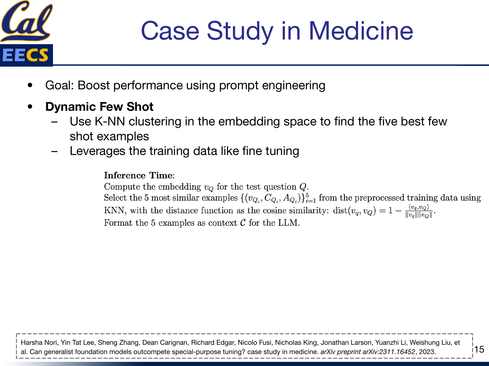
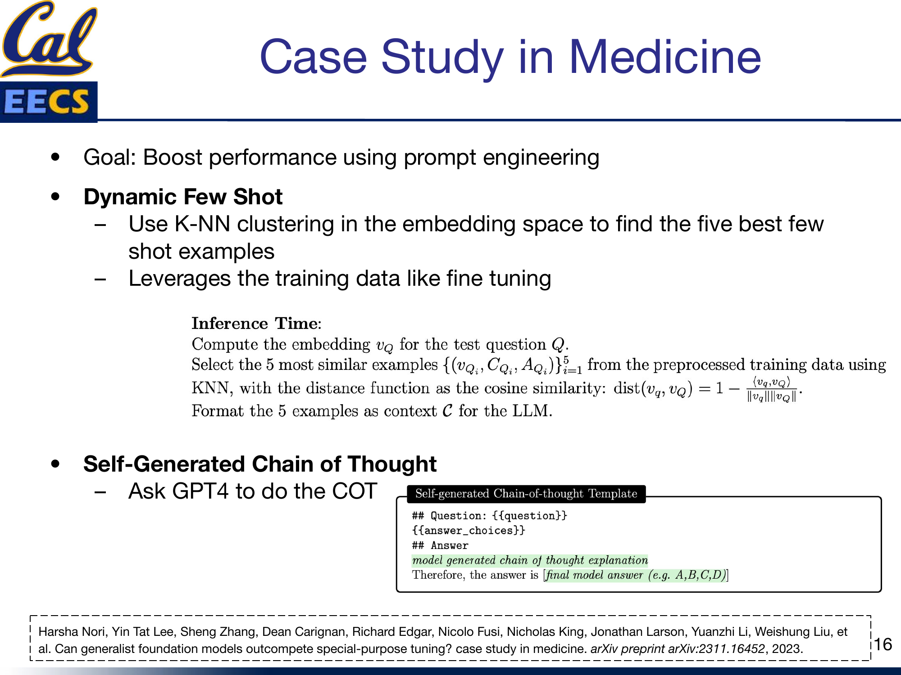
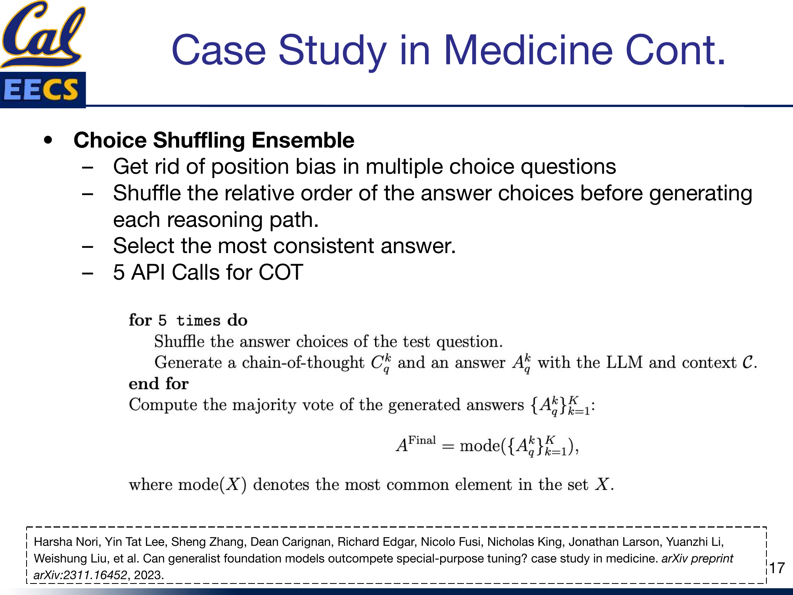
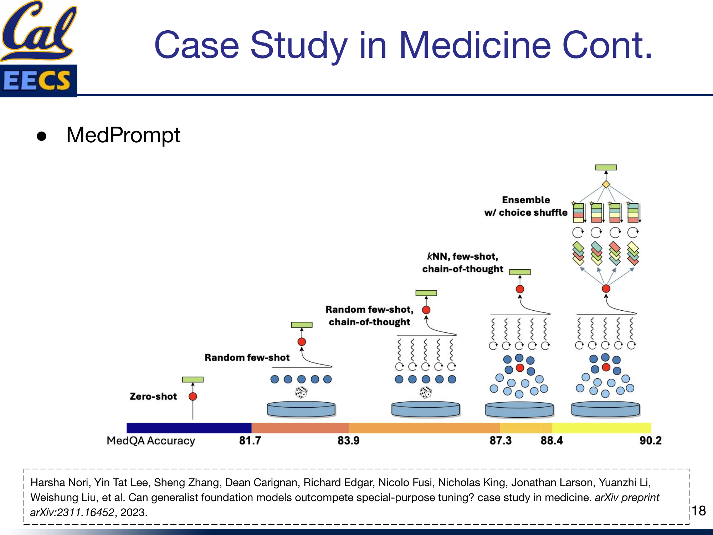
Chart: MedQA accuracy progression from PubMedBERT (38.1%) through various models and strategies to GPT-4 Medprompt (90.2%)
Starting from a zero-shot baseline of 81.7%, each technique adds incremental improvement. Dynamic few-shot selection adds 2.2 points. Chain of thought adds another 3.4-4.5 points. And the choice shuffling ensemble pushes the final score to 90.2% -- outperforming fine-tuned specialist models like Med-PaLM 2 that required extensive domain-specific training.
This is the key insight: a general-purpose model (GPT-4) with no medical fine-tuning, equipped with the right prompting strategies, outperforms models that were specifically trained on medical data. The prompting techniques covered in this post -- few-shot selection, chain of thought, and ensembling -- are not just academic ideas. Combined thoughtfully, they deliver state-of-the-art results in a domain where accuracy literally matters for patient outcomes.
The Bigger Picture
The techniques covered here are just the beginning. The field is expanding rapidly in several directions:
- Zero-Shot CoT: Prompting with just "Let's think step by step" -- no hand-crafted examples needed
- Automatic CoT: Automatically generating diverse reasoning chains as demonstrations
- Self-Consistency with CoT: Sampling multiple reasoning paths and taking the majority vote
- Visual In-Context Learning: Applying prompting techniques to vision tasks
- Multi-Modal In-Context Learning: Extending prompting across text, image, and other modalities
- Speech In-Context Learning: Adapting prompting strategies to speech models
- Graph Classification Prompt Tuning: Applying soft prompt methods to graph neural networks
The common thread is the same: instead of retraining the model, find smarter ways to communicate with it.
Key Takeaways
Here is the evolution, compressed:
-
Fine-tuning works but does not scale. Updating all parameters for each task is expensive, requires labeled data, and means storing a full model copy per task.
-
Hard prompts are cheap but limited. Prompt engineering requires no training, but you are constrained to discrete tokens and cannot systematically optimize.
-
Soft prompts hit the sweet spot. Continuous, learnable vectors that are optimized through backpropagation while keeping the model frozen. Prefix tuning adds them at every layer; prompt tuning adds them only at the embedding layer and is simpler and more parameter-efficient.
-
Prompt tuning scales with model size. At 10 billion+ parameters, prompt tuning matches full fine-tuning performance with roughly 20,000 trainable parameters per task instead of 11 billion.
-
Ensembling reduces instability. Running diverse prompts and aggregating their predictions tackles hallucination and output variance -- critical for production systems.
-
Chain of thought unlocks reasoning. Asking the model to show its work improves performance on arithmetic, symbolic, and commonsense tasks, especially at scale.
-
Combining techniques is where the real gains are. MedPrompt shows that stacking dynamic few-shot selection, self-generated CoT, and choice shuffling ensembles can push a general-purpose model past fine-tuned specialists.
The trajectory is clear: we are moving from expensive model modification toward cheap, modular, and composable prompting strategies. The model stays fixed; the interface gets smarter.